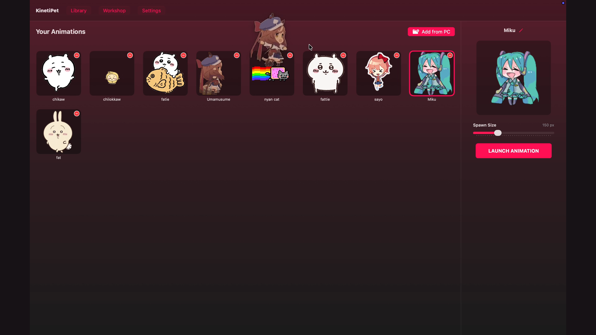
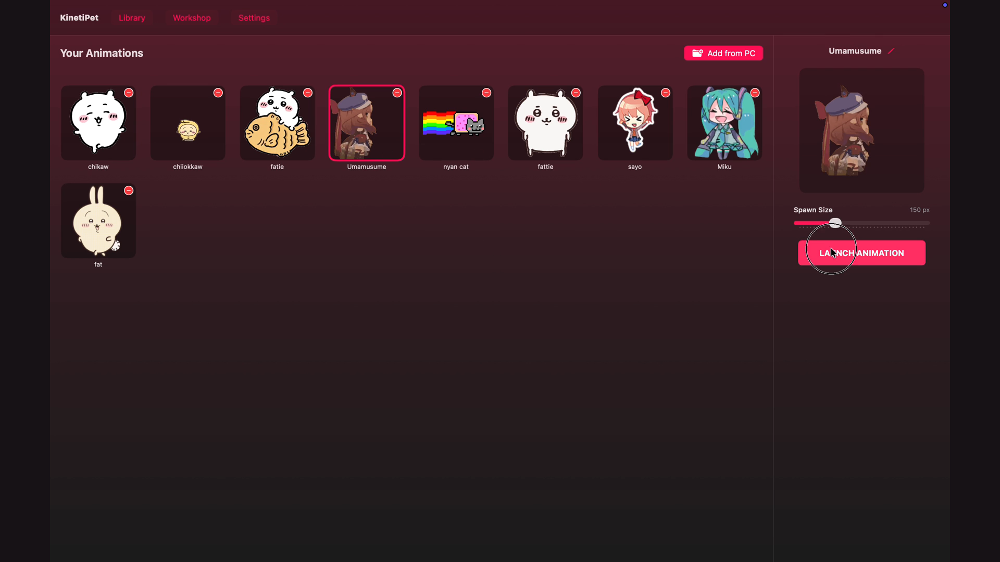

Anime companions that truly live on your Mac.
Reimagining desktop companions natively with Swift, AppKit, and SwiftUI. Companions obey realistic surface gravity, converse through contextual speech bubbles, interact with one another, and react to your desktop atmosphere.

Test the Animatto experience directly in your browser.
A faithful browser simulation reproducing native companion physics, personality-driven speech bubbles, ambient weather particles, and menu bar controls. Drag companions, spawn friends, and change the desktop mood!
Companions quietly curl up to sleep or sit peacefully during active focus sessions, then hop with celebratory chimes on break!
Built with deep respect for the macOS ecosystem.
Animatto isn't a web wrapper or heavy electron sandbox. It is written in Swift, utilizing transparent floating NSPanels, AppKit event loops, and Apple Vision ML.
Autonomous Roaming & Surface Collisions
Companions navigate across all virtual desktop Spaces. Using macOS accessibility APIs, companions detect the top borders of your open application windows to stand, walk, and leap between your active work.
- Terminal Velocity Clamping: Falling physics capped at 18 pt/tick to prevent tunneling through windows.
- Surface Bounce Damping: 0.35 energy restitution factor for natural, soft landings.
- Upside-Down Menu Bar Mode: Inverts gravity vector upwards along the macOS Menu Bar.
10 Archetypes & Dynamic Needs
Internal drives for Energy, Happiness, Curiosity, and Boredom evolve dynamically in real time without calling cloud LLMs.
Smart Speech Bubbles & Anti-Spam
Contextual dialogue reacts to open apps, Spotify/Apple Music playback, and ambient events with strict 3-second global cooldowns and 12-second character limits.
Local Continuous Memory & Social Encounters
When multiple companions live on your desktop, they notice each other, approach, exchange greetings, play, and remember past encounters in a strictly local JSON memory store.
Focus & Pomodoro Companion
Quick countdown timers (5m, 15m, 30m, 60m) and classic Pomodoro intervals. Companions sleep peacefully during deep focus and celebrate when break arrives.
On-Device Magic Eraser (Local Vision ML)
Powered by Apple's native VNGenerateForegroundInstanceMaskRequest to remove backgrounds from still images and animated GIF frames 100% offline.
<companion>.meta.json preserve author attribution
Atmospheric desktop worlds and weather sync.
Transform your desktop atmosphere with 6 independent, GPU-accelerated particle weather simulations, companion dialogue reactions, and collectible starlight minigames.
Gentle Rain
Angle-inclined precipitation with surface splash physics on windows and dock. Sleepy companions curl up for cozy naps.
Winter Snow
Gentle drifting flakes with dynamic horizontal sway and varied particle depth. Curious companions observe falling crystals.
Misty Fog
Soft rolling translucent mist clouds drifting across the display. Creates a calm, soothing atmosphere for focused study.
Golden Sunlight
Warm diagonal shimmering god-rays and floating ambient dust specks. Energetic companions celebrate with joyful hops.
Windy Breeze
Directional air currents carrying subtle dust trails. Companions lean into gusts and race across window tops.
Autumn Leaves
Tumbling autumn maple and oak leaves rotating in 3D with air turbulence. Playful companions chase falling leaves.
See the real macOS application in action.
Actual captures and video recordings from Animatto running on macOS Sonoma.

Full 78-Second Application Demonstration
Engineered with a strict privacy-first charter.
Animatto runs on your device, stores data locally, and gives you total control over desktop monitoring.
| What Animatto Does | What Animatto NEVER Does |
|---|---|
| ✅ 100% Offline Core Physics: Movement, gravity, autonomous needs, and personality matrix require zero internet. | ❌ No Telemetry or Tracking: Zero analytics SDKs, advertising pixels, or background usage pings. |
| ✅ On-Device Local Vision: Magic Eraser runs entirely on your Mac's Neural Engine / GPU via Apple Vision. | ❌ No Silent Screen Captures: Screen awareness requires explicit opt-in consent and downscales in volatile RAM only. |
✅ Local IPC Discord RPC: Communicates with Discord through a local Unix domain socket (discord-ipc-0). |
❌ No Keystroke Logging: Floating companion overlays do not hook or intercept keyboard events in other apps. |
| ✅ Emergency Privacy Shield: 1-click in the Menu Bar popover instantly freezes simulation and dismisses bubbles. | ❌ No Cloud Accounts Required: No login screens, subscriptions, or credit card requirements. |
System requirements and permissions.
Operating System
macOS 14.6 (Sonoma) or newer. Fully validated on macOS 15 (Sequoia).
Hardware Architecture
Universal Binary supporting both Apple Silicon (M1/M2/M3/M4) and Intel 64-bit Macs.
Accessibility Permissions
Optional: Required only for window-edge surface collision scanning so companions can sit atop apps.
Screen Recording Permission
Optional: Required only if the optional Screen Awareness contextual AI feature is enabled.
Frequently Asked Questions
Animatto uses lightweight macOS accessibility window APIs to sample the bounding rectangles of frontmost windows. When a companion falls or jumps, its physics collider checks for surface contact along window title bars and window frames, allowing natural landing and walking.
Yes! Drag any transparent PNG, animated GIF, or WebP file into Animatto's Library. The app automatically segments frames, validates magic byte signatures, creates a companion profile, and saves attribution sidecars (.meta.json).
No. Animatto is built with native Swift/AppKit, which draws on lightweight NSPanel surfaces with minimal CPU footprint. Additionally, the ambient worlds engine includes Low Power mode ($\le 40$ particles) and automatically throttles down during battery operation.
Animatto integrates with the open-source Open-Meteo weather API. It requires zero API keys, never sends your identity, enforces strict 15-minute rate-limiting with offline caching, and includes a 1-click button in settings to completely clear stored coordinates.
Yes, 100%! All 17 roadmap phases—including physics roaming, personality engine, speech bubbles, memory, multi-companion interactions, focus timer, workshop magic eraser, and ambient worlds—are permanently free and open-source under the Apache 2.0 license.
Because Animatto is an independent open-source application, right-click (or Control-click) Animatto.app in your /Applications folder on first launch and select Open, then click Open in the macOS confirmation dialog.
Bring your desktop to life today.
Download the latest universal release for Apple Silicon and Intel Macs.
7cd6da512cbcea0ac2da93f9b10b20a65eb3f799eae8d7ad6d85e23a69d18ee3